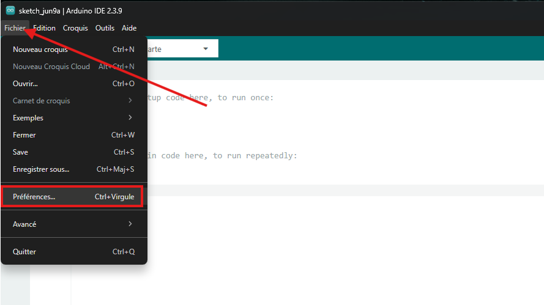
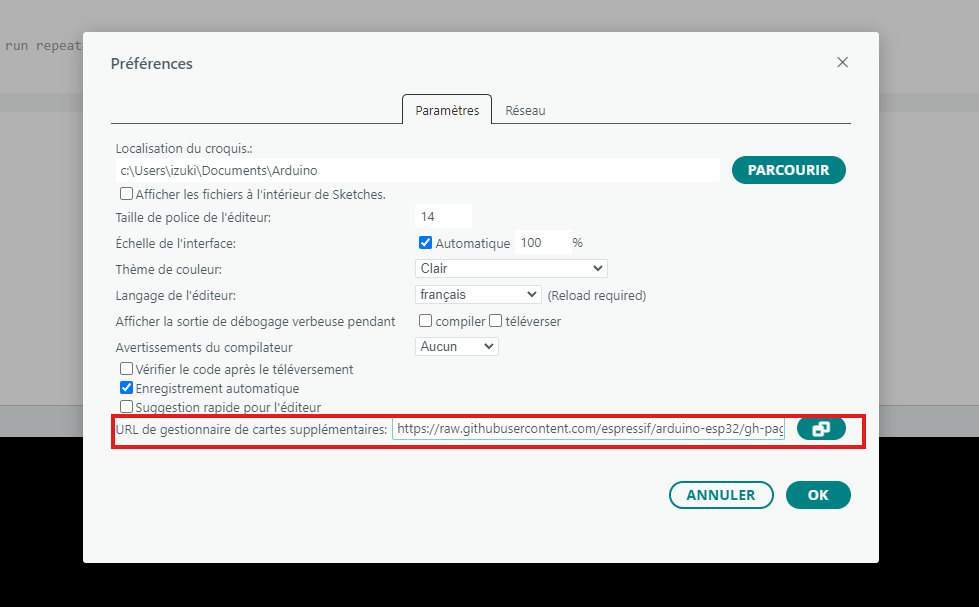
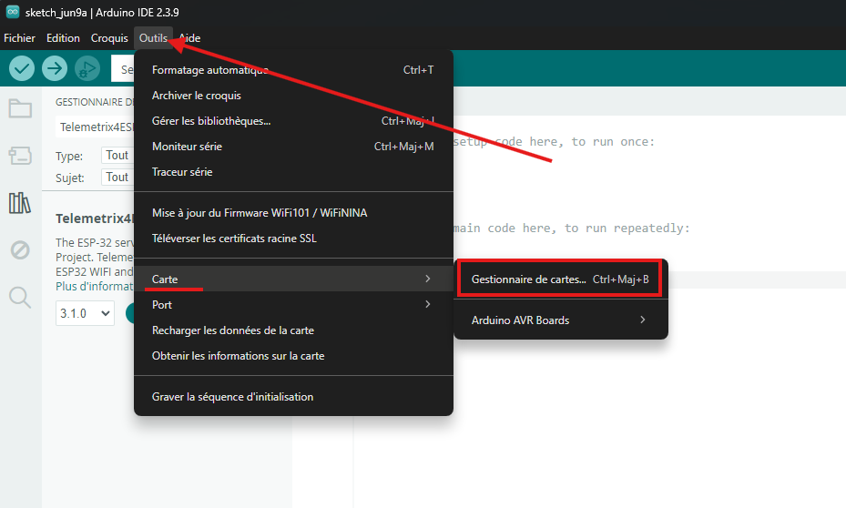
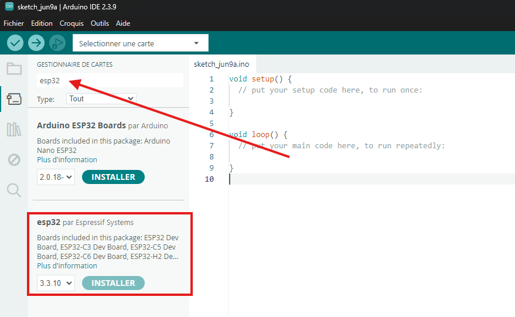
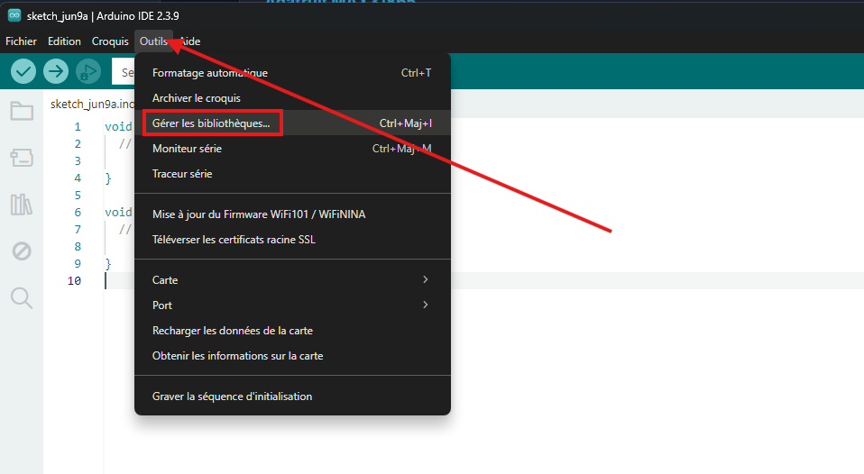
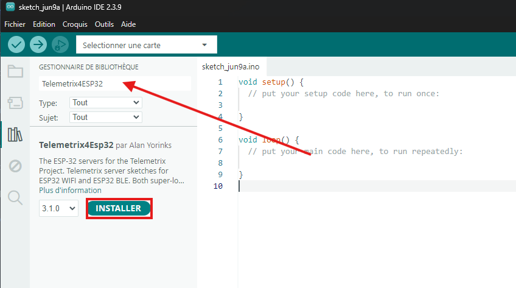
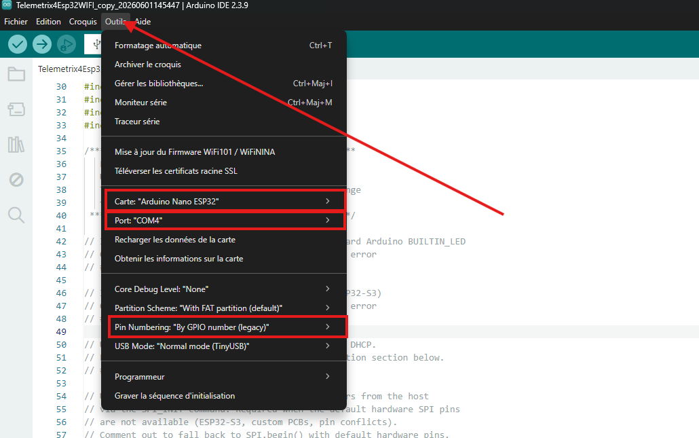
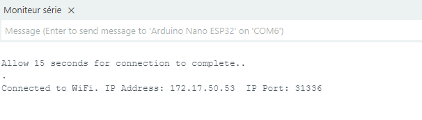

Flash du Firmware sur l'Arduino Nano ESP32
Cette notice décrit comment préparer l'Arduino IDE, installer les bibliothèques nécessaires et flasher le firmware Telemetrix sur l'Arduino Nano ESP32.
1. Principe de Fonctionnement
Telemetrix fonctionne selon un modèle client/serveur :
- Le firmware (serveur) : Un sketch C++ fixe flashé une seule fois sur l'ESP32. Il attend des commandes via WiFi et renvoie les données au client.
- Le client Python : Le plugin PyMoDAQ qui envoie des commandes et reçoit les données. Aucune modification du firmware n'est nécessaire pour changer le comportement.
La communication s'effectue via WiFi (TCP/IP) sur le port
31336. L'ESP32 et l'ordinateur doivent être sur le même réseau local.
2. Installation de l'Arduino IDE
L'Arduino IDE est nécessaire pour compiler et uploader le firmware sur l'ESP32. Téléchargez la dernière version depuis le site officiel Arduino correspondant à votre système d'exploitation.
3. Ajouter le Core ESP32
L'Arduino IDE ne supporte pas l'ESP32 nativement. Il faut ajouter le core via le gestionnaire de cartes.
- Ouvrir l'Arduino IDE.
- Aller dans Fichier → Préférences.
- Dans le champ « URL de gestionnaire de cartes supplémentaires », coller l'URL suivante :

https://raw.githubusercontent.com/espressif/arduino-esp32/gh-pages/package_esp32_index.json
- Valider avec OK.
- Aller dans Outils → Type de carte → Gestionnaire de cartes.
-
Rechercher
esp32et installer le paquet « esp32 by Espressif Systems ».



4. Installer le Firmware
Téléchargez le fichier firmware en cliquant sur le lien ci-dessous
Telemetrix4Esp32WIFI
Clic droit → Enregistrer sous
Une fois téléchargé, double-cliquez sur le fichier pour l'ouvrir directement dans l'Arduino IDE.
Les bibliothèques nécessaires sont à installer via Outils → Gérer les bibliothèques :

Telemetrix4Esp32

5. Configurer le Sketch
En haut du fichier se trouvent les feature flags. Vérifiez que la configuration suivante est bien appliquée avant de compiler.
5.1 Renseigner les identifiants WiFi
Renseignez le SSID et le mot de passe du réseau local :
const char *ssid = "NOM_DU_RESEAU"; const char *password = "MOT_DE_PASSE";
5.2 Vérifier les feature flags
Les lignes suivantes doivent être dans cet état exact :
// #define LED_BUILTIN_SUPPORTED 1 // laisser commenté // #define DAC_SUPPORTED 1 // obligatoire — l'ESP32-S3 n'a pas de DAC // #define WIFI_STATIC_IP 1 // laisser commenté sauf besoin d'IP fixe #define SPI_CUSTOM_PINS 1 // obligatoire pour le MAX31865 #define SPI_RAW_REGISTER_READ 1 // obligatoire pour le MAX31865 #define SPI_PERSISTENT_SETTINGS 1
DAC_SUPPORTED doit rester commenté. L'Arduino
Nano ESP32 est basé sur un ESP32-S3 qui ne possède pas de convertisseur DAC — la
compilation échoue si cette ligne est active.
6. Sélectionner la Carte et Uploader
- Connecter l'Arduino Nano ESP32 à l'ordinateur via USB-C.
- Aller dans Outils → Type de carte → esp32 et sélectionner Arduino Nano ESP32.
- Aller dans Outils → Type de carte et vérifier que le mode GPIO Legacy est sélectionné.
- Aller dans Outils → Port et sélectionner le port COM correspondant à la carte.
- Cliquer sur le bouton Televerser.
-
Si l'upload échoue avec une erreur
No DFU capable USB device available, appuyer deux fois rapidement sur le bouton RESET de la carte pour la passer en mode bootloader, la led doit etre verte, puis relancer l'upload. - Attendre la fin de la compilation et du transfert.

7. Récupérer l'Adresse IP de l'ESP32
Une fois le firmware uploadé, l'ESP32 se connecte automatiquement au réseau WiFi. Pour connaître son adresse IP :
- Aller dans Outils → Moniteur Série.
- Régler la vitesse à 115200 bauds.
- L'ESP32 affiche son adresse IP après connexion WiFi.

config_arduino.toml pour que le plugin PyMoDAQ puisse se connecter
à l'ESP32.
8. Vérifier la Connexion Réseau
Pour s'assurer que l'ESP32 est joignable depuis l'ordinateur, ouvrez un terminal et effectuez un ping :
ping 192.168.X.X
Si vous recevez des réponses, l'ESP32 est correctement connecté au réseau. Vous pouvez passer à la page suivante pour installer le plugin PyMoDAQ.